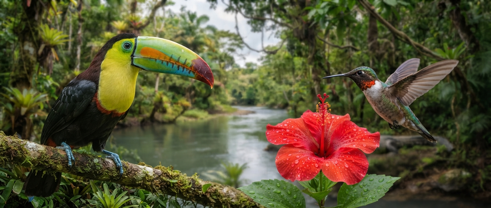
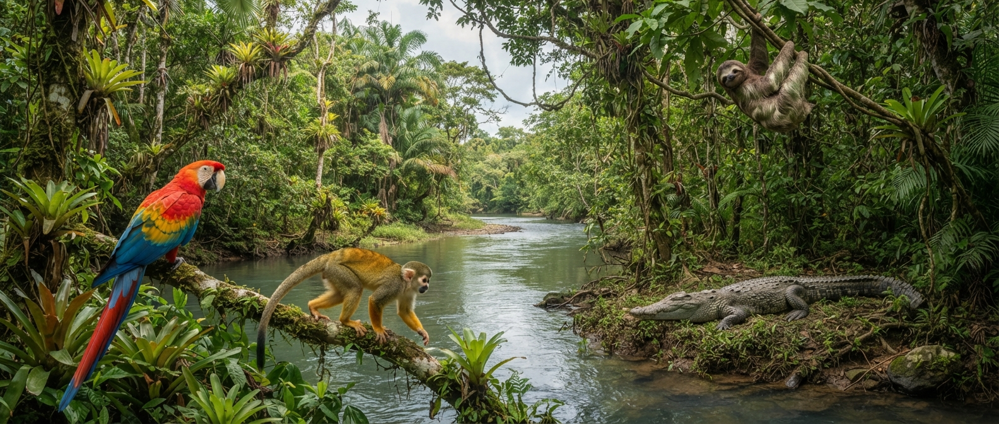
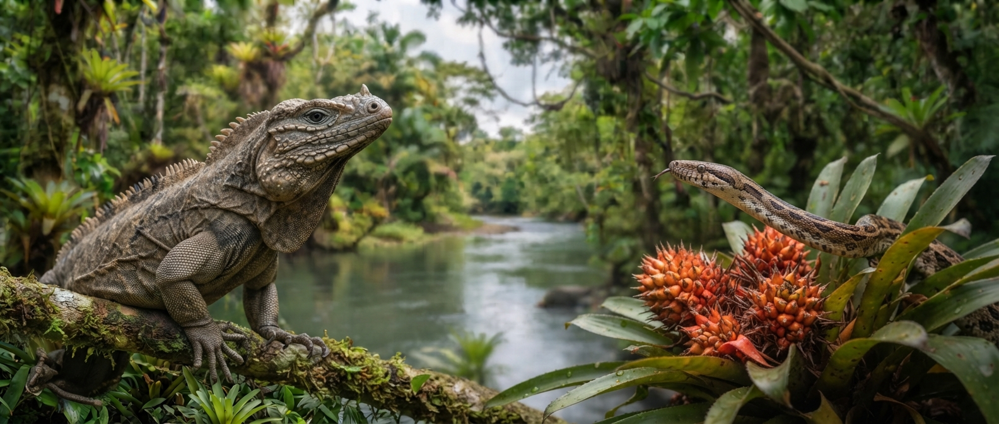
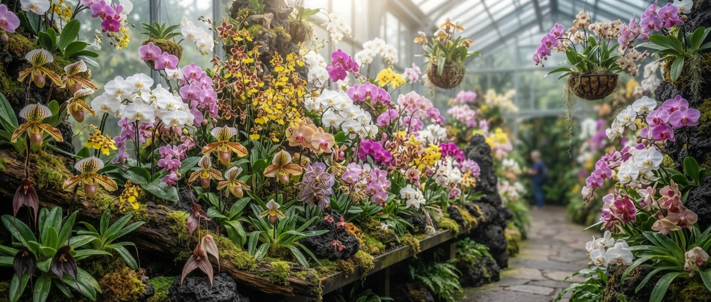
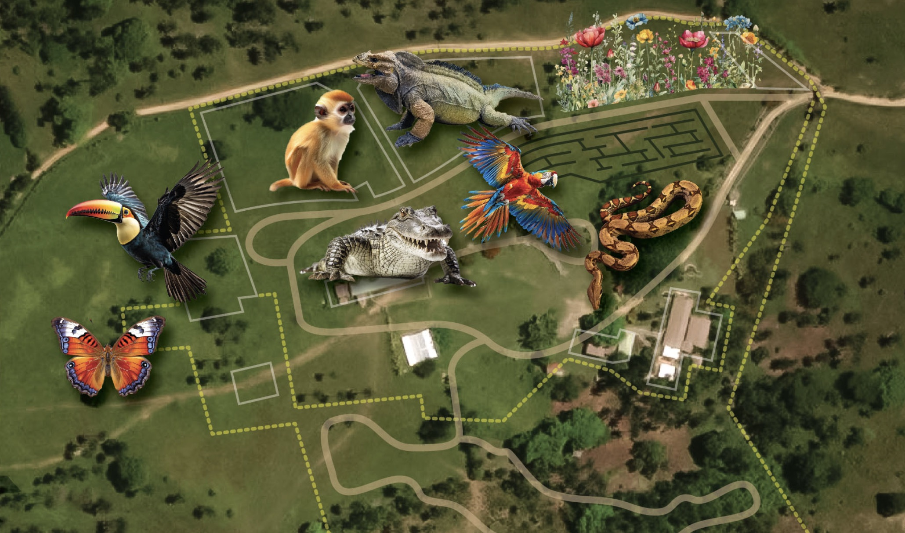

Aviario
Guacamayas, tucanes y el colibrí vervain en vuelo libre bajo malla de bosque tropical.
Ver más →
Una experiencia única con animales exóticos y jardines espectaculares, en el extremo oriental de la isla. Exotic wildlife, botanical gardens and island culture — all in one walk.

Guacamayas, tucanes y el colibrí vervain en vuelo libre bajo malla de bosque tropical.
Ver más →
Iguanas, serpientes y anfibios nativos, con recorrido señalizado a nivel del suelo.
Ver más →
Flora sudamericana, senderos sombreados y el mirador del extremo oriental de la isla.
Ver más →